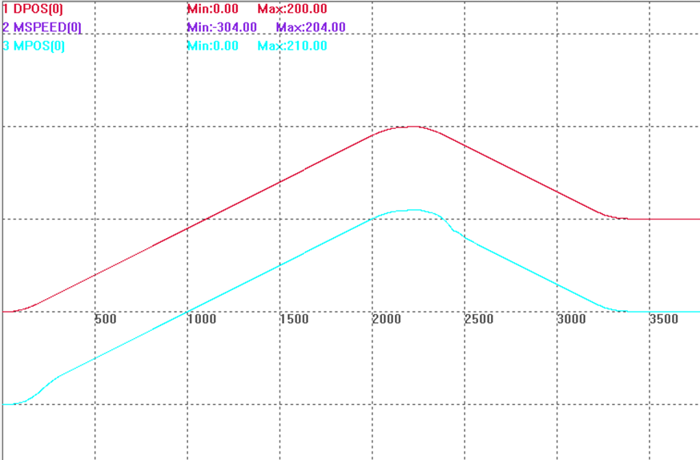

|
运动设置指令 | |
|
描述 |
设置轴的反向间隙，扩展轴无效。 |
|
语法 |
BACKLASH(enable [,dist[,speed,acceleration]]) enable：使能与否 dist：距离，units单位 speed：反向间隙速度 acceleration：反向间隙加速度 |
|
适用控制器 |
通用 |
|
例子 |
例一 BACKLASH(0) '关闭反向间隙功能 BACKLASH(1,0.1) '设置反向间隙0.1mm
例二 RAPIDSTOP(2) WAIT IDLE(0)
BASE(0) ATYPE=5 '带编码器反馈 UNITS = 1000 SPEED = 100 ACCEL = SPEED * 10 DECEL = SPEED * 10 SRAMP = 0 DPOS = 0 MPOS = 0
BACKLASH(0) '关闭反向间隙 TRIGGER
'应用反向间隙参数 BACKLASH(1, 10, 50, 100) '10units补偿 MOVE(200) MOVE(-100) '反向时开始补偿 END  |